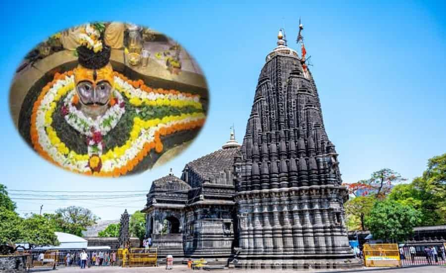
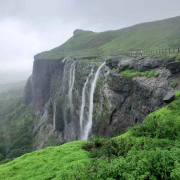

Trimbakeshwar Shiva Temple (श्री त्र्यंबकेश्वर ज्योतिर्लिंग मंदिर) is an ancient Hindu temple in the town of Trimbak, in the Trimbakeshwar tehsil in the Nashik District of Maharashtra, India, 28 km from the city of Nashik and 40 km from Nashik road.[1][2] It is dedicated to the Hindu god Shiva and is one of the twelve jyotirlingas where the Hindu genealogy registers at Trimbakeshwar, Maharashtra are kept. The origin of the sacred Godavari River is near Trimbak.[3] Several Hindu rituals are carried out in Trimbakeshwar, for that pilgrims travel from all over India. Kusavarta kunda (sacred pond) in the temple premises, built by Shrimant Sardar Raosaheb Parnerkar who was the Fadnavis of Indore State, is the source of the Godavari River, the second longest river in India. A bust of Sardar Fadnavis and his wife can be seen on the edge of the kunda. The current temple was built by Peshwa Balaji Baji Rao after it was destroyed by Mughal ruler Aurangzeb.
As per the Shiva Purana, once Brahma (the Hindu God of creation) and Vishnu (the Hindu God of preservation) had an argument in terms of supremacy of creation.[6] To test them, Shiva pierced the three worlds as a huge endless pillar of light, the jyotirlinga. Vishnu and Brahma split their ways to downwards and upwards respectively to find the end of the light in either direction. Brahma lied that he found out the end, while Vishnu conceded his defeat. Shiva appeared as the second pillar of light and cursed Brahma that he would have no place in ceremonies while Vishnu would be worshipped till the end of eternity. The jyotirlinga is the supreme partless reality, out of which Shiva partly appears. The Jyotirlinga shrines, thus are places where Shiva appeared as a fiery column of light.[7][8] Originally there were believed to be 64 jyotirlingas while 12 of them are considered to be very auspicious and holy.[6] Each of the twelve jyotirlinga sites take the name of the presiding deity - each considered different manifestation of Shiva.[9] At all these sites, the primary image is lingam representing the beginningless and endless Stambha pillar, symbolizing the infinite nature of Shiva.[9][10][11] The twelve jyothirlinga are: Somnath at Veraval in Gujarat, Mallikarjuna at Srisailam in Andhra Pradesh, Mahakaleswar at Ujjain in Madhya Pradesh, Omkareshwar in Madhya Pradesh, Kedarnath in Himalayas, Bhimashankar in Maharashtra, Viswanath at Varanasi in Uttar Pradesh, Triambakeshwar in Nashik in Maharashtra, Vaidyanath at Deoghar in Jharkhand, Nageshwar Temple at Dwaraka in Gujarat, Rameshwar at Rameswaram in Tamil Nadu and Grishneshwar at Aurangabad in Maharashtra.

Shri Trimbakeshwar is a religious center having one of the twelve Jyotirlingas. The extraordinary feature of the Jyotirlinga located here is its three faces embodying Brahma, Vishnu, and Shiva. Due to the excessive use of water, the linga has started to erode. It is said that this erosion symbolizes the eroding nature of human society. The Lingas are covered by a jeweled crown which is placed over the Gold Mask of Trideva (Brahma Vishnu Shiva). The crown is said to be from the age of Pandavas and consists of diamonds, emeralds, and many precious stones. The original Nassak Diamond which adorned the revered linga was eventually stolen by the British and currently is placed on a sword. The crown is displayed every Monday from 4-5 pm (Shiva). All other Jyotirlingas have Shiva as the main deity. The entire black stone temple is known for its appealing architecture and sculpture and is at the foothills of a mountain called Brahmagiri. Three sources of the Godavari originate from the Brahmagiri mountain.

The Godavari River is often referred to as the Ganga of the South due to its significance. According to Hindu mythology, the Godavari has a divine origin, and several stories are linked to its creation. The Birth of the Godavari – Sage Gautama’s Penance: Sage Gautama is a central figure in the story of the Godavari's origin. It is said that Gautama Rishi once lived in a secluded ashram with his wife, Ahalya, in the region of Trimbakeshwar (near modern-day Trimbak in Maharashtra). There was a severe drought that affected the region, and the local people suffered from hunger and thirst. To alleviate their suffering, Sage Gautama prayed to the river Ganges for help. However, the Ganges was reluctant to come to the region due to the disturbance caused by her descent from the heavens. Sage Gautama performed intense penance and austerities for thousands of years at the peak of Brahmagiri Hill, located in the Trimbakeshwar area. Pleased with his devotion, Lord Shiva agreed to bless Gautama and directed the Ganges to flow in that region. However, the river could not directly flow due to the wrath of Shiva, and instead, the Ganges appeared as a stream and flowed to the earth through the Trimbak hills. This stream eventually became known as the Godavari River. The Godavari river is considered sacred, and it is believed that Sage Gautama bathed in its waters to purify himself from the sin of unintentionally killing a cow. This act of penance and purification is a key part of the mythological origin of the river. Kusavarta, a place where river Godavari takes course. Connection to Lord Vishnu and Lord Shiva:
This temple is on top of the Neel mountain. All goddesses ('Matamba', 'Renuka', 'Mananmba') came here to see 'Parashuram' when he was performing penance (tapas). After his penance, he requested all goddesses to stay there and the temple was formed for these goddesses. Akhil Bhartiya Shree Swami Samarth Gurupeeth, Trimbakeshwar Temple of Shri Swami Samarth Maharaj. This temple is 1 km from Shiva Temple. This temple is a marvelous example of Vastu Shastra

Shri Trimbakeshwar Shiva Temple is 30 kilometers on road from Nashik, and 157 kilometers from Thane. The best way to reach the temple is by road. The closest railway station is the Nashik Road Railway Station that is 39 kilometers by road.